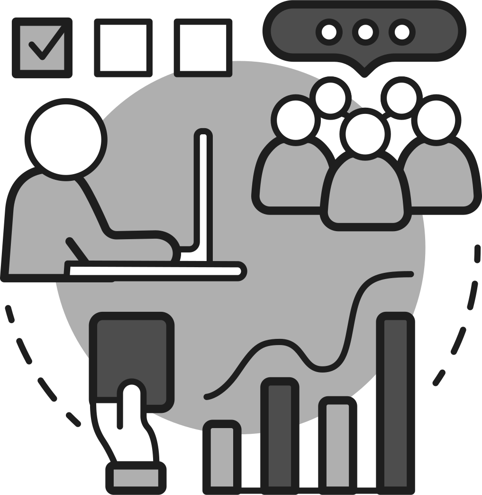

User Research
In-depth understanding of the core factors that influence a user experience both psychologically and sociologically: useful, usable, findable, credible, desirable, accessible, and valuable. Performing a mix of user research methodologies: usability testing, user interviews, card sorting, tree testing, first-click testing, A/B testing, focus groups, and surveys; that support or negate creative solutions using the collected qualitative and quantitative data.